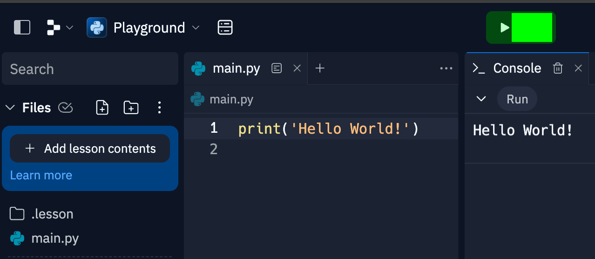
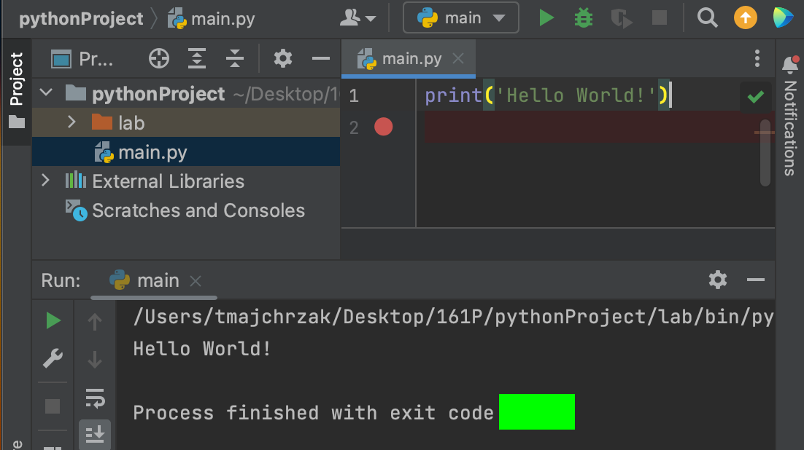
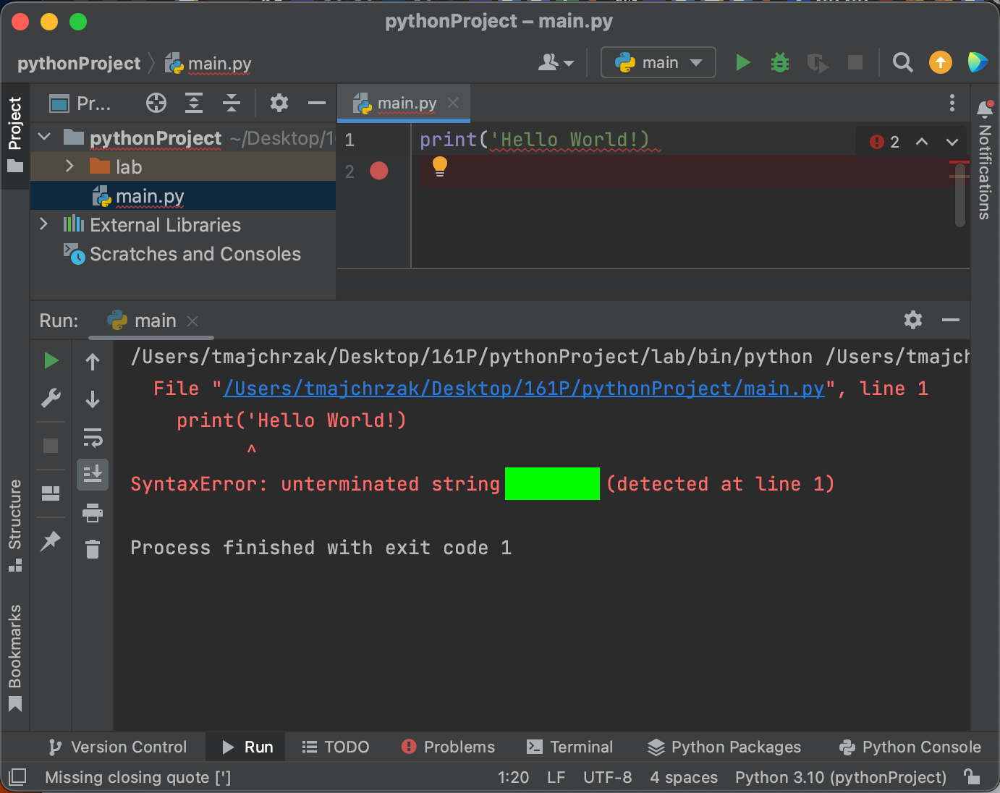
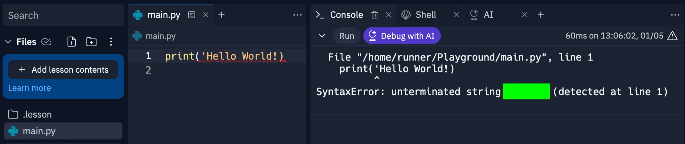
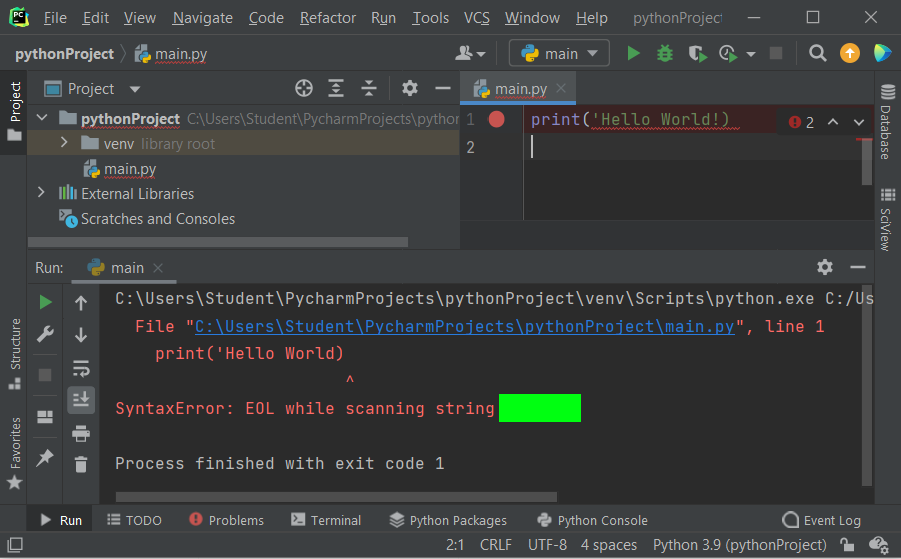

Complete Capture the Flag (CTF) activities below. You can check that you have the correct flags at the CTF link above. If you'd like to register your progress and to have your name appear on the leaderboard, you may opt to include your name when entering flags. As you capture flags and verify they're correct, keep track of them, so you can enter them into Canvas and earn class points toward your grade.
Then watch the videos on the Readings and Videos page in the Study Materials section.
Then attempt the challenges below.
An IDE is an integrated development environment, which allows you to edit code, compile it, debug it, and run it. Some good choices include PyCharm, Replit, and VS Code. While Replit is a good IDE to start with as a new programmer, PyCharm and VS Code are IDEs you're more likely to see used professionally.
The first program people generally write when learning a new language is Hello World. It gives them a chance to see if they can get the coding environment to work and produce simple output. You'll find Hello World on page 7 of the CP 161P readings for this week. In her video, Mari Good shows how to use the Replit and PyCharm IDEs to enter and run Hello World.
Replit requires you to sign up for an account to try it. If you prefer, you can try an online alternative IDE called JDoodle which doesn't require an account. To run your code in JDoodle, click the Execute button. For Replit, the button Mari shows in her video to run the code is Run. It looks like Replit's interface has changed, so just use Run for this flag.
For Replit, what button do you need to click to execute the code? The flag is under the green box. Replit's interface has changed. Please enter Run for this flag. Run is a common term used by different IDEs for running code.

Try the PyCharm IDE by entering and executing the Hello Word code in it. PyCharm is a professional IDE developed by JetBrains that is available for Linux, Mac, and Windows. There is a free educational license available for all the JetBrains software. PyCharm also is available in the classroom and in the Computer Lab. Below are some resources to help you learn more about it and to get it installed on your home system, if you wish.
What does PyCharm report when Hello World executes? The flag is under the green box.

Now try saving your hello world program in a file called main.py, saving that file in a folder with a name of your choosing, zipping the folder, and submitting the zipped folder to be checked for accuracy.
On a Windows computer, you can put your main.py file in a folder, right click the folder, choose Send to, and then choose Compressed (zipped) folder. Here's a video showing the process.
On a Mac, you can right click (two finger press) and choose Compress <folderName>, where folderName is the name of your folder.
Submit your zipped folder containing main.py to this code checker to get the flag.
Comments are notes to yourself and others who might need to read and update your code. At minimum, you should have one at the top of your program stating what it does, your name, and the date it was last modified. You should put them within your code to help clarify what different sections do, like at the beginning of each function, and also where code might be challenging to understand. We'll learn about functions later.
Which delimiter begins a single line comment, but not a multiline comment?
Which delimiter is used for multiline comments?
Knowing how to use different IDEs can be helpful. If one stops working for you, you have another one you can use. If you're working with a team, it can be helpful to use the same IDE. Sometimes IDEs will identify and describe error and warning messages differently. These messages can be hard to understand, in which case reading messages from multiple compilers can help you discern what they're trying to tell you. Keep in mind that compilers (and IDEs) are just programs written by people. Communication is a two way street. If you don't understand an error message, it's not all on you. Perhaps the person could have composed a more understandable message, and maybe you'll find that's the case with a different compiler. Whenever you do figure out what's wrong with your code, try to consider the error and warning messages again to see if what they were trying to say makes more sense. As you reconsider messages, practice coding, and learn programming terminology, understanding compiler warnings and errors will get easier.
Try altering Hello World to contain an error, so it generates an error message. Specifically, remove the second quote from the string getting printed. You'll find that PyCharm (on a Mac) and Replit both generate similar error messages. The flag is under the green box and is the same for both IDEs.


Notice as well that both error messages indicate the issue occurred in file main.py on line 1.
PyCharm (on a PC) produces a different, but similar error message. Again, the word under the green flag is the same, but the message says EOL (which means end of line) while scanning string. The two compilers above report the string is unterminated. They're both having an issue at the end of the line, but say this in a slightly different way.

Try making additional changes to the code to see what kinds of error messages get generated. Do they make sense? If not, ask me about them. They'll likely inspire some interesting conversations and bonus learning!
Of course, we don't normally break code on purpose. When we write code, we try to remove errors and get it to run properly. This is called debugging. The code below has one or more errors. See if you can find them. You can use an IDE of your choice, or you can even use the code checking tool which uses the python3 compiler on Linux. In general, it's good practice to focus on just the first error reported, fix it, then recompile, and once again, focus on the first error message. This is because the compiler can get very lost very quickly after the first error. Fixing the first error often fixes other errors (which aren't really errors).
The code below adds a feature, asking the person for their name and then displaying it in a greeting. It uses input to retrieve a string from the user, which it stores in a variable called name. It has one or more errors. See if you can find them.
name = input("What is your name? ")
print("Hi, " + Name + "!")
After you've debugged the code and gotten it to run, submit your zipped folder containing main.py to this the code code checker to get the flag.
The code below asks a user for a number, converts the string entered to an integer, multiplies it by two, and displays the result. It has one or more errors. See if you can find them.
value = integer(input("Enter an integer between 1 and 10: "))
output(value * 2)
After you've debugged the code and gotten it to run, submit your zipped folder containing main.py to this code checker to get the flag.
The code below adds two numbers and displays the sum. It has one or more errors. See if you can find them.
number1 = input(Enter an integer between 1 and 10: ) number1 = input(Enter a second integer between 1 and 10: ) print(number1 + number2)
After you've debugged the code and gotten it to run, submit your zipped folder containing main.py to this code checker to get the flag.
Write a program which asks the user for two inputs. The first input is their favorite color. The second input is their favorite number. Output in a complete sentence both of their answers. Use two variables, one for the color and one for the number.
After your code is working, submit your zipped folder containing main.py to this code checker to get the flag.